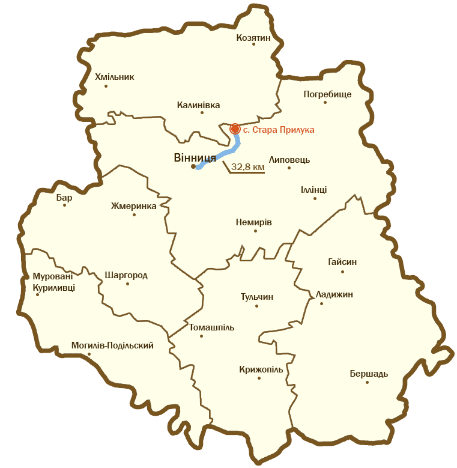

Загальні відомості
Палац Мерінга був побудований в 18 столітті, при володінні магнатів Вершицьких і знаходиться у селищі Стара Прилука, Липовецького району.
Історія
Олександр Борецький побудував у Прилуках палац та заклав тут також парк, каплицю. Утримував також стадо породистих коней. Донька Олександра — графиня Гонората Борецька побудувала у Прилуках костел Св. Анни в 1805 р. та Преображенську церкву 1819 р. В другій половині 19 ст. палац перебудував Чеслав Здиховський. В кінці XIX століття село Стара Прилука, що розташоване у Вінницькій області, належала Сергію Мерінгу, синові відомого київського лікаря Ф. Ф. Мерінга. У володінні Сергія Федоровича були цегляний і цукровий заводи, а також водяний млин. Сам маєток було в оренді у Казимира Бліжовского, який і вів орендне господарство. Нині в колишньому палаці міститься Староприлуцька спеціалізована загальноосвітня школа-інтернат.
Зовнішній вигляд
Сергій Мерінг також перебудував або тільки реставрував палац. Достеменно не відомо, який був за виглядом палац Борецького. Відомо, що Борецький провадив життя магната і оточував себе відповідним побутом. Також не відомо, що саме було зміненно Чеславом Здеховським та Мерінгом. В палаці знаходилися картини старих шкіл німецьких та іспанських малярів, а з також роботи Стімлера, Ґроттґера. Виставлені на продаж сином Здеховського картини були оцінені в 100 000 срібних карбованців. Частина галереї Здеховського попала в руки російського уряду.
Палац Мерінга нагадує київський Маріїнський палац. Стиль замку – необарокко. Деякі внутрішні приміщення, в тому числі і вестибюль, виконані в мавританському стилі і досить схожі з іспанським палацом Альгамбра. З внутрішнього оздоблення збереглася майолікова обробка стін і стель у вестибюлі, а в деяких кімнатах і стелі з червоного дерева.
Як дістатися
Адреса палацу: вул. Інтернаціональна 4, с. Стара Прилука, Липовецький р-н, Вінницька обл.
До палацу можна дістатися автомобілем, виїзжджаючи по вулиці Чехова, або рейсовим автобусом.
На рисунку видно, що до с. Стара Прилука дорога займе 32.8 км (майже півгодини).
